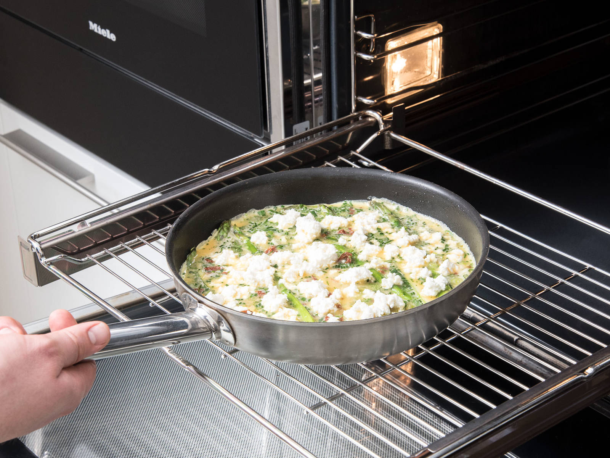

难度
易👌
准备
烘焙时间
静置时间
食材
份数：
½
| 1 | 鸡蛋 |
| 50克 | 绿芦笋 |
| ¼ | 小葱 |
| ⅝ 克 | 欧芹 |
| ⅝ 克 | 山萝卜 |
| ⅝ 克 | 香葱 |
| 7½ 克 | 干番茄 |
| 6¼ 毫升 | 奶油 |
| 2½ 克 | 帕玛森奶酪 |
| 12½ 克 | 乳清干酪 |
| 盐 | |
| 胡椒 | |
| 煎炒用橄榄油 | |
| 佐餐用新鲜山萝卜 | |
| 佐餐用摩尔登海盐 | |
| 佐餐用柠檬 |
用具
刀，砧板，烤箱，煎锅，搅拌器，大碗
每份所含营养
卡路里
302
302
蛋白质
23克
23克
脂肪
20克
20克
碳水化合物
7克
7克
烹饪步骤 1/5

- ¼小葱 -
- ⅝克欧芹 -
- ⅝克山萝卜 -
- ⅝克香葱 -
- 7½克干番茄 -
- 50克绿芦笋
刀 - 砧板
清洗小葱，切去根部后切成小圈。清洗并剁碎欧芹、山萝卜、和香葱。切好干番茄，待用。清洗芦笋，切去底部后纵向切半。
烹饪步骤 2/5

-
煎炒用油
烤箱 - 煎锅
将烤箱预热至180度。在煎锅中，中高火加热橄榄油。放入芦笋条，煎5分钟，或直至芦笋稍微变软但仍脆口。
烹饪步骤 3/5

- 1鸡蛋 -
- 6¼毫升奶油 -
- 2½克帕玛森奶酪 -
- 盐 -
- 胡椒
搅拌器 - 大碗
此期间，在一个碗中混合搅拌鸡蛋和奶油。倒入干番茄、小葱和剁碎的草本。帕玛森奶酪擦屑后也倒入其中。撒盐与胡椒，充分搅拌。
烹饪步骤 4/5
- 12½ 克 乳清干酪
将蛋液混合物倒入煎锅中，没过芦笋。一点点放上乳清干酪，然后放进烤箱，以180度烤15-20分钟，或直至蛋液凝固。
烹饪步骤 5/5

- 佐餐用山萝卜 -
- 佐餐用莫尔登海盐 -
- 佐餐用柠檬 -
将蛋饼从烤箱中取出，饰以山萝卜、莫尔登海盐，佐以柠檬块。尽情享用吧！
评论 (3)